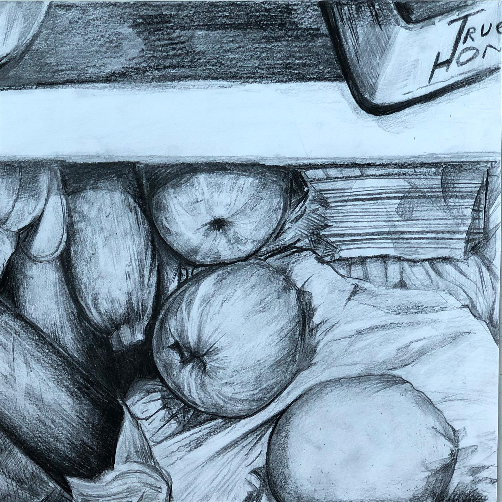

The view of our talented daughter on our fridge 😄 We don’t normally celebrate thanksgiving, not a usual holiday in our culture, but this year we got a special present for Thanksgiving - the news that our Arina got admitted to School of the Arts Singapore! It was extremely tough competition and exceptionally tough year for our daughter... we are so thankful for her strength, talent, courage to go through university level admission at the age of 13! We are thankful for her being able to find inspiration in our almost totally vegan fridge for her admission art task (she is not a veggie fan tbh) 😄😄😄 and we are so thankful to the school admission center for their hard work during COVID and recognition of Arina’s talent among thousands of applicants! 2020 is paying back for being so nasty all this time 😂 thank you! ___ #thankful #thankfulgratefulblessed #thanksgiving #sota #singapore #veggies #veganfoodshare #foodforthought #fridgegoals #thanksgiving2020 #finally
2020-11-26 20:20:08
Back to main page